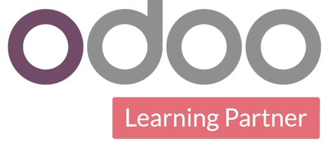
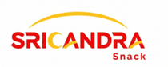
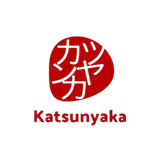

Pemetaan proses bisnis
Kami duduk bareng tim Anda, catat alur yang sudah jalan, lalu cari bagian yang paling sering bikin data nggak cocok.
Membangun sistem bisnis sejak 2016 · Odoo Learning Partner 2024
Penjualan, stok, pembelian, dan keuangan masuk ke satu Odoo. Paket implementasi mulai Rp 30 juta, sudah termasuk support tahun pertama.
Kuota kickoff project terbatas
Dipercaya bisnis lintas industri



Layanan
Kami duduk bareng tim Anda, catat alur yang sudah jalan, lalu cari bagian yang paling sering bikin data nggak cocok.
Modul Odoo diatur mengikuti SOP Anda. Kalau ada kebutuhan yang nggak tersedia bawaan, kami buatkan.
Data pelanggan, produk, stok awal, dan saldo dipindah dari Excel atau software lama. Sistem lama boleh jalan paralel dulu.
Training dibagi per peran, lalu kami dampingi setelah go-live. Tim nggak dilepas begitu sistem nyala.
Dari pesanan masuk sampai laporan laba rugi, semuanya tercatat di satu sistem yang dipakai seluruh tim. Bukan lima aplikasi yang nggak saling kenal.
Penawaran, sales order, sampai invoice dalam satu alur. Pipeline tim sales kelihatan tanpa harus minta laporan.
Stok di tiap gudang sama dengan yang di sistem. Odoo kasih tanda sebelum barang habis.
Tiap penjualan dan pembelian langsung jadi jurnal. Closing bulanan nggak perlu lembur.
Permintaan barang, PO, dan tagihan vendor tercatat rapi, lengkap dengan alur persetujuan.
Odoo jalan di browser dan aplikasi mobile. Cek omzet atau setujui PO dari mana saja.
Angka di atas ilustrasi tampilan, bukan data klien.
Kata klien
“Yang membuat HASH unik adalah kemampuan mereka untuk memahami kebutuhan spesifik kami dan membangun solusi software secara tepat. HASH selalu mendengarkan kebutuhan dan tantangan kami, lalu merancang solusi yang tidak hanya memenuhi kebutuhan bisnis kami, bahkan melebihi harapan. HASH secara konsisten menyediakan solusi ramah pengguna, dan sangat efisien, serta memungkinkan kami untuk merampingkan operasi harian dan mencapai tujuan bisnis dengan lebih efektif.”
“HASH Rekayasa Teknologi telah menyediakan software yang komprehensif, dan dilengkapi keamanan yang tangguh untuk memastikan data dan informasi bisnis dapat terlindungi dari ancaman potensial. Mereka mampu menghasilkan pekerjaan berkualitas tinggi dan selalu menunjukkan perhatian mendalam terhadap detail, yang memungkinkan saya mencapai tujuan bisnis. Saya sangat puas dengan layanan yang telah diberikan, dan sangat merekomendasikan mereka. Terima kasih atas kerja luar biasa yang telah dilakukan!”
Cara kerja
Kita petakan alur bisnis Anda sekarang. Gratis, tanpa komitmen lanjut.
Modul Odoo sesuai kebutuhan nyata, lengkap dengan estimasi biaya.
Mulai dari modul paling mendesak. Sistem lama boleh jalan paralel.
Training per peran dan support lanjutan setelah sistem nyala.
Paket implementasi
Harga sama untuk Odoo Community maupun Enterprise. Semua paket sudah termasuk support tahun pertama, jadi tim nggak dilepas begitu sistem nyala.
Basic
Rp 30 juta
Untuk bisnis dagang, distribusi, atau retail yang butuh modul inti dalam satu sistem.
Pro Manufaktur
Rp 60 juta
Untuk pabrik yang perlu hitung BOM dan HPP, atau bisnis yang butuh lebih dari modul inti.
Pilih ini jika bisnis Anda punya produksi dan perlu hitung BOM dan HPP.
Pro Custom
Rp 60 juta
Untuk bisnis dengan alur kerja khusus yang nggak tercakup fitur bawaan Odoo.
Pilih ini jika alur kerja Anda khusus dan butuh pengembangan fitur.
| Yang Anda dapat | Basic | Pro Manufaktur | Pro Custom |
|---|---|---|---|
| Modul inti (Pembelian, Inventory, Penjualan, Akuntansi, PoS) | |||
| Manufaktur atau 3 modul tambahan | |||
| Kustomisasi | 10 mandays | 30 mandays | |
| Konfigurasi & training online | |||
| Migrasi data | |||
| Pendampingan intensif setelah go-live | 2 minggu | 1 bulan | 1 bulan |
| Kunjungan ke lokasi | |||
| Support Basic tahun pertama | Gratis | Gratis | Gratis |
| Tambah modul | Mari kita diskusikan | ||
| Tambah kustomisasi | Mari kita diskusikan | ||
Support, maintenance, dan cloud server dalam satu paket tahunan. Paket Basic gratis di tahun pertama untuk semua paket implementasi.
| Basic | Pro | Premium | |
|---|---|---|---|
| Biaya | Rp 18 juta/tahunGratis tahun pertama | Rp 36 juta/tahun | Rp 72 juta/tahun |
| Waktu respons | 2 jam | 1 jam | 30 menit |
| Jam layanan | Senin–Jumat, 08.00–17.00 | Setiap hari, 08.00–20.00 | 24 jam, setiap hari |
| Channel | Tiket via email & Telegram | Tiket via email & Telegram | Tiket via email & Telegram prioritas |
| Bantuan fungsional | Panduan & training | Panduan, konfigurasi, asistensi | Panduan, konfigurasi, asistensi |
| Masalah kritis selesai | Maks. 24 jam | Maks. 8 jam | Maks. 8 jam |
| Server | Odoo Online | Single tenant | Dedicated instance |
Mau pakai server sendiri (on-premise)? Bisa, tanpa jaminan uptime, dan ada biaya setup Rp 8 juta (maks. 2 server) kalau tidak mengambil paket Pro atau Premium. Ketentuan server untuk bisnis Anda kami bahas saat konsultasi.
FAQ
Tidak. Kita mulai dari modul yang paling mendesak, lalu tambah bertahap setelah tim terbiasa. Sistem lama bisa jalan paralel selama masa transisi.
Bisa. Data master seperti pelanggan, produk, dan vendor, plus stok awal dan saldo, kami pindahkan ke Odoo sebelum go-live.
Mulai Rp 30 juta untuk paket Basic dengan 5 modul inti, sudah termasuk support tahun pertama. Kalau butuh manufaktur atau kustomisasi, paket Pro mulai Rp 60 juta. Rinciannya ada di bagian paket.
Bisa. Kami sediakan training per peran dan pendampingan setelah go-live, jadi tim belajar sambil sistemnya benar-benar dipakai.
Implementasi mengikuti workflow bisnis Anda, support tetap mendampingi setelah go-live, dan biaya transparan sejak awal termasuk estimasi jangka panjang.
Bisa. Konsultasi awal gratis dan tanpa kewajiban lanjut. Kalau memang belum butuh sekarang, kami bilang apa adanya.
Konsultasi gratis 30 menit
Ceritakan kondisi bisnis Anda sekarang lewat WhatsApp. Kami bantu petakan modul mana yang perlu dipasang duluan.